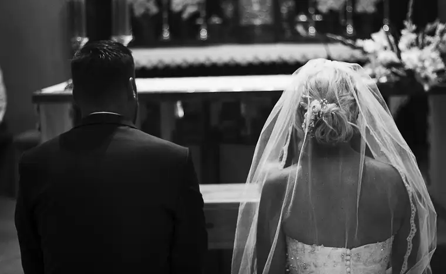
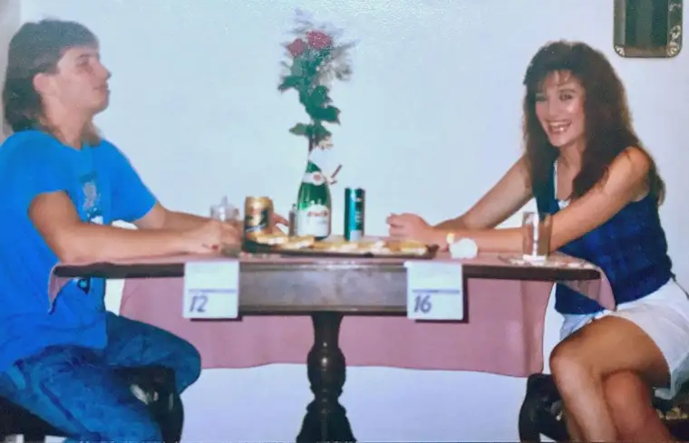
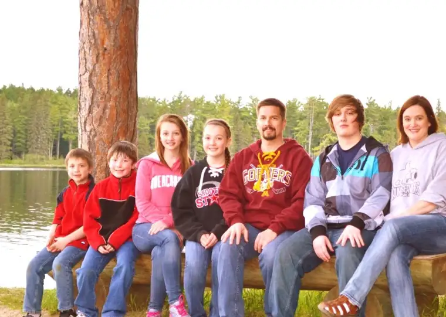

“Marriage is to help married people sanctify themselves and others. For this reason they receive a special grace in the sacrament which Jesus Christ instituted. Those who are called to the married state will, with the grace of God, find within their state everything they need to be holy.” – Saint Jose Maria Escriva

In the beginning, I really didn’t understand the implications. Like so many, as a young woman who was still more of a girl inside, looking for my soul mate seemed more about just not wanting to be alone, and feeling a call toward being a wife, a mother, and achieving career goals.
Marriage did seem a natural trajectory, but I didn’t give the longview a long thought. I didn’t realize that marriage wasn’t just about having someone with whom to share this life, experience the joys of having children, and growing old in grace. I didn’t really see how marriage is even more about helping each other get to heaven.
No, back then, when I was 19, going on 20, I couldn’t have really grasped this.

It’s only been through time, and many trials, that this deeper understanding of marriage has become known to my heart, but I feel compelled — rather urgently actually — to share, because if you happen to be in a struggling marriage, this idea could help save it — and you both.
I want to be honest, though, so you’ll understand how we got here, and how hard it has been. My husband and I began our lives together with a lot of deficits, and a lot of hurdles. It haunted me a bit in the months leading up to our wedding day: How would we be different than the many marriages who didn’t make it? And could we possibly overcome our deficiencies?
Our “courting” was filled with drama. Our beginning wasn’t what I’d call a healthy start. We were running from our pasts and into one another’s arms. The relationship was more co-dependent and competitive than calm and clear.
And yet there was something there — something that endured numerous break-ups, and led us to the altar of our Lord.
As the storms rolled in, and our unhealed pasts worked themselves out in not always grace-filled ways, we faced, more than once, the prospect of becoming another statistic of divorce. In moments, it seemed utterly impossible that our marriage would survive the torrents.
It was painful. It was confusing. It was heart-breaking. And yet, something held us together. Somehow, little by little, tiny bits of hope sprang forth, and despite the odds, we hung onto those tiny droplets for dear life, allowing them to be our anchors, small as they were.

It led to us celebrating 25 years of marriage last summer, and pushing forward to improve our marriage day by day.
I don’t know that what we’re studying right now as our Lenten commitment will bear fruit. I don’t know that we’ll ever become one of the “exceptional” couples.

This concept still seems so far off. But if we don’t know what it looks like, we can’t ever reach it, so at 49, we’re studying how a truly abundant marriage works, thinking that maybe we’ll find something to absorb that will in time bless our journey and others we encounter.
What I know for sure is this. Grace is real, and God kept his promise that he made to us when we made our promise to one another — even when we strayed from the commitment, thinking it impossible. God didn’t give up even when we did. God just kept being God, and stayed present, and held us together somehow.
And I think, for me at least, one of the concepts that has helped above all has been this profound realization that marriage isn’t just about having a companion in life, but helping our spouse get to heaven. The more I viewed marriage this way, the less burdened and disappointed I felt in the daily journey. Surprisingly, I learned it wasn’t all about me. It was about finding myself held firstly by Him, serving and loving Him in response, and helping lead my husband further into His grasp through that renewed relationship.
From there, I’ve come to realize, most humbly, that in helping lead my hubby to heaven, he’s been helping lead me there just as much. For in his weaknesses, I’ve confronted my own, and in so doing, I’ve been called to more. In facing this brokenness that my marriage has revealed, God has picked me up and helped mend me, so that I could become more fit for the kingdom someday, too.
So, it’s really not about having it all here on earth, though sometimes, we can stand back and see the beauty of what we’ve helped bring forth together here, and find it very worthwhile.

It’s more about leading this whole crew, in all our imperfections, toward the eternal bliss that awaits. When we can see that our bumbling about together has meaning, everything changes.
So dear ones, if you are in a place that feels daunting, hang on. If you feel compelled to give up, read Leila Miller’s “Primal Loss,” stories from adult children of divorce, and think through what giving up could mean. Don’t surrender to the world based on a temporary situation. God’s grace is unfathomable. Trust in Him to perform miracles.
And know that the sacrament of marriage is powerful — beyond understanding. Indeed, it can, against all earthly odds, lead us, and our spouse, to heaven.
Q4U: When has the sacramental grace of marriage changed your life?